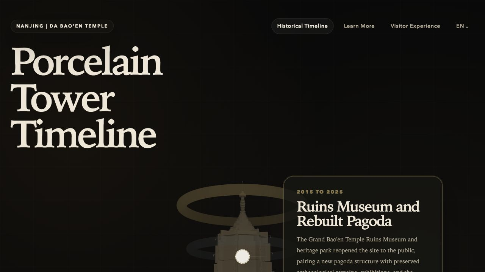
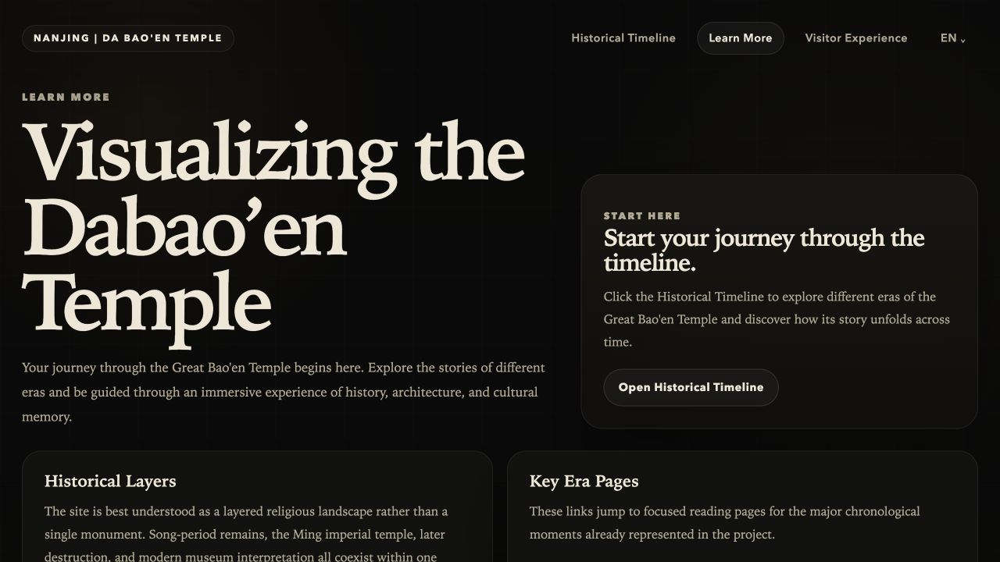
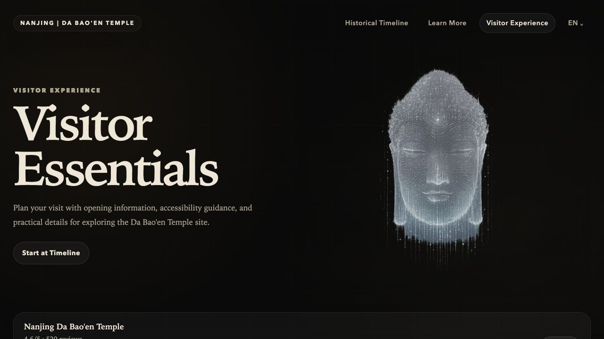

Role
UI Designer · Front-End Developer · API Integration
( project 03 )
Interactive Museum Website with 3D Timeline and Bilingual UX
This team website was designed as an immersive cultural and historical experience around the Da Bao'en Temple / Porcelain Tower. My work focused on UI direction, front-end effects, bilingual presentation and external API integration.
Role
UI Designer · Front-End Developer · API Integration
Focus
Visual language, page transitions, 3D storytelling and bilingual structure.
What It Shows
Team web design, interactive front-end thinking and cultural content presentation.
( contribution )
My contribution focused on how the site should feel and move, not just what it should contain. I worked on the overall UI direction, the bilingual tone of the site, interactive page effects and the integration of external data and map-based features.
Experience Structure
Design Lens
Historical interpretation, interface clarity and a more immersive digital visit.
( visuals )

The homepage combined a strong editorial title treatment with the interactive pagoda scene and era cards, setting up the site as both a historical narrative and a guided digital visit.

The supporting content page extended the project beyond spectacle, using clean hierarchy and paced card layouts to make historical context easier to read and navigate.

This section connected usability with mood, combining access-oriented content with a stronger visual identity so the museum context still felt immersive outside the main timeline view.